日曜日の便り。本日2026年6月28日、インド・ケーラ州でWHO DON-609として確認されたニパウイルス症例（6/11）の接触者追跡が完結し、104名全員陰性・二次感染ゼロという封じ込め成功に近い状況が続いている。同時期、エボラDRC/ウガンダは欧州2か国を含む波及とともに1,155例・304死者へ拡大を続ける。同じ週、同じPHEIC並行下で、対照的な帰結が鮮明に浮かびあがった。天では天問2号が7/4のカモオアレワ最接近に向けて軌道確認を続け、JWSTは初期宇宙で6銀河が合体する現場を捉えた。SMA治療では高用量スピンラザ承認とアピテグロマブPDUFA 9/30という承認ラッシュが続き、人間のデジタルツインをめぐる論文群が「自分とは何か」という問いに新しい言語を与えている。
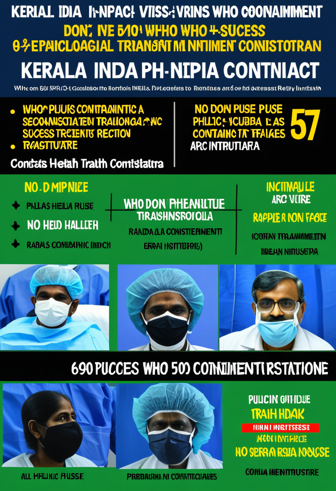
2026年6月11日にWHOが発表したニパウイルス確定症例（コジコード地区の成人男性1名、5/30発症・6/10 ICU入院）は、ケーラ州当局とWHOの迅速な接触者追跡を経て、6月18日時点で特定・追跡中の接触者104名（医療従事者含む）が全員陰性を維持し、二次感染がゼロという状況が続いた。4〜9月はニパウイルスの高警戒期間。2019・2021・2023年に続くケーラ州での散発的NiV検出だが、今回は早期検出・完全な接触追跡・ICU隔離プロトコルの組み合わせが、エボラPHEIC継続という「最も過酷な負荷の時期」に封じ込め成功を実現しつつある。感染致死率40〜75%の危険な病原体を前に、インドの公衆衛生インフラが国際的な対応能力を示した事例として記録される可能性がある。
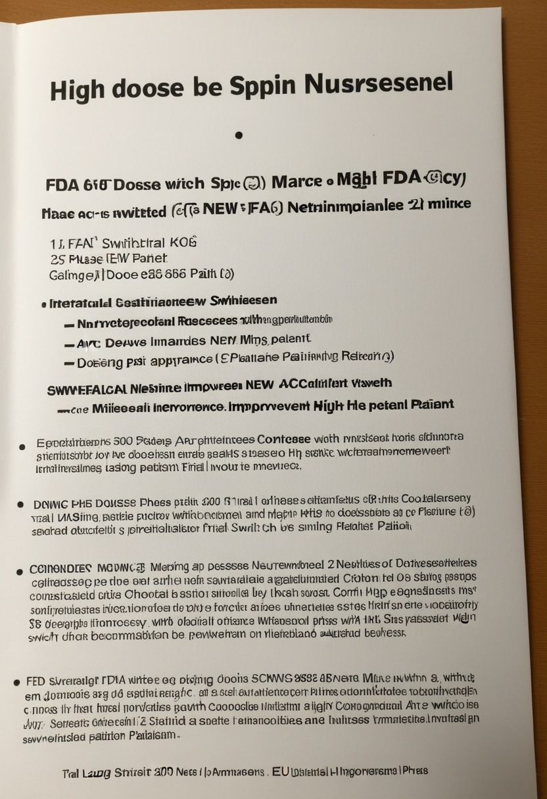
Biogen社の高用量スピンラザ新レジメン（ローディング2回×50mg→維持28mg/4か月毎）がFDAに2026年3月30日承認。Phase 2/3 DEVOTE試験でCHOP-INTEND平均+26.19点の改善（マッチド対照比）を示した。EU・スイス・日本でも承認済み。既存患者の切り替えと新規患者への高用量開始が可能になり、ヌシネルセン治療の選択肢が大幅に拡張された。「神経を守る」に加え「より効果的に守る」ための用量最適化がついに実現した。
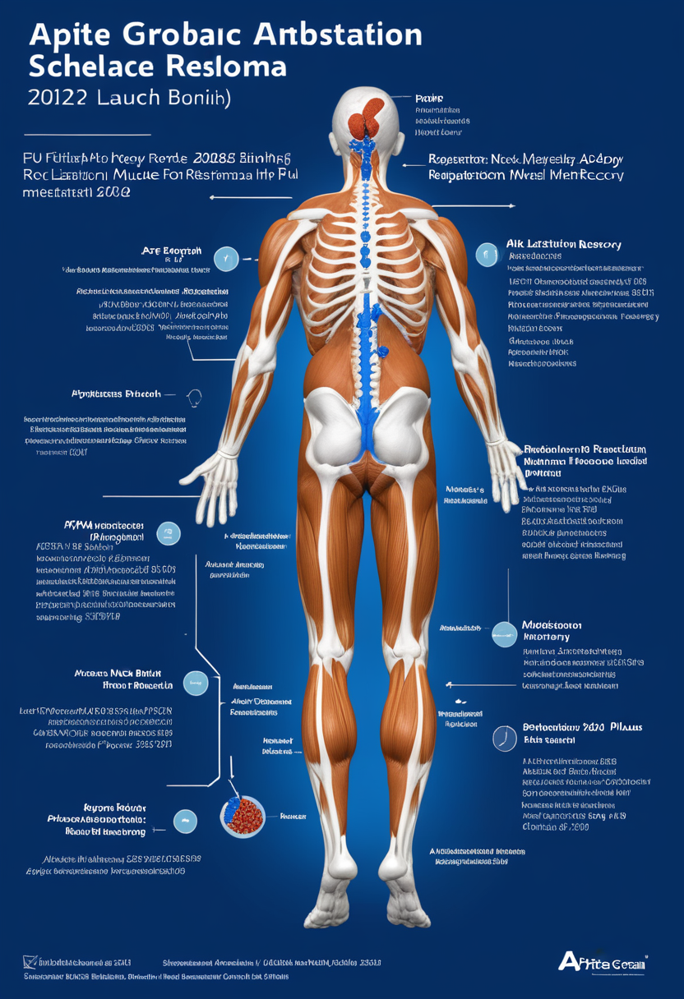
SAPPHIRE Phase 3で52週HFMSE+3点改善率30.4%（プラセボ12.5%、Cure SMA会議6/24-26発表済）。FDA PDUFAは2026年9月30日。EUでのMAA判定も「2026年中旬」とScholar Rockが発表。BLA再申請・米国商業化も2026年内目標。承認されれば筋スタチン（myostatin）のプロ型・潜在型に選択的に結合する完全ヒト型抗体として、ヌシネルセン・リスジプラム（Evrysdi）・Zolgensmaとの「神経保護＋筋肉回復」の併用戦略が現実的選択肢となる。
2026年中盤現在、SMA患者が利用できる治療選択肢: ①Zolgensma（一回投与遺伝子治療）②高用量スピンラザ（ヌシネルセン・FDA 3/30承認）③リスジプラム（Evrysdi）経口薬 ④アピテグロマブ（筋肉標的・承認審査中、PDUFA 9/30）。Biogenの次世代薬サラネルセン（BIIB115）はFDAブレークスルー療法指定取得済みで2026年11月に初期データ発表予定。SMAは「一治療時代」から「患者ごとの組み合わせ選択の時代」に完全移行し、2026年後半は承認ラッシュの頂点を迎える。
2026年後半、SMAは高用量スピンラザ国際承認・アピテグロマブPDUFA 9/30・BIIB115初期データ（11月）という3重の承認事象が重なる。「神経保護＋筋肉回復」の時代がいよいよ始まる。
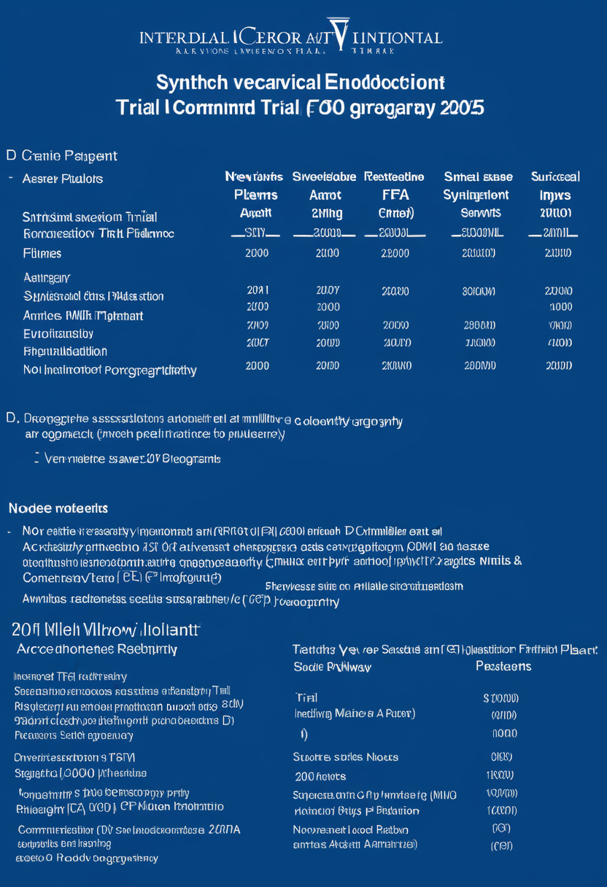
SynchronはCOMMAND初期実行可能性試験で6名全員が「埋め込み後1年間で重篤デバイス関連有害事象ゼロ」の一次エンドポイントを達成。2025年11月に2億ドルのシリーズDを完了し、2026年中に初のBCI FDA-PMA申請を目指すピボタル試験を開始。Stentrodeは静脈（脳の血管）内留置型で開頭手術を必要とせず、血管造影のみでインプラント可能という点が外科リスクの大幅低減につながる。SMA・ALS患者のコミュニケーション補助から商業スケールへの橋渡しが最も進んだ段階にある。
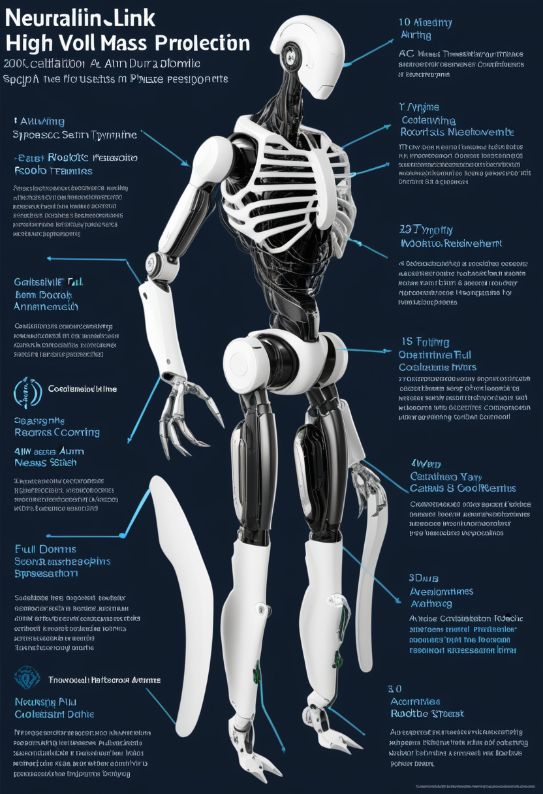
Elon Muskが「BCIデバイスの大量生産とほぼ完全自動化された手術プロセスへの移行を2026年に開始」と表明。新手術法では電極スレッドが硬膜（脳保護膜）を除去せずに通過し、手術侵襲性を大幅に低減。現在21名のNeuronautsがロボットアーム制御・毎分40ワード文字入力等を達成。FDAから音声復元向けBreakthrough Device Designationを取得し、動作制御・文字入力・音声復元の3スコープが並走する「フルスタックBCI」戦略が明確化されている。
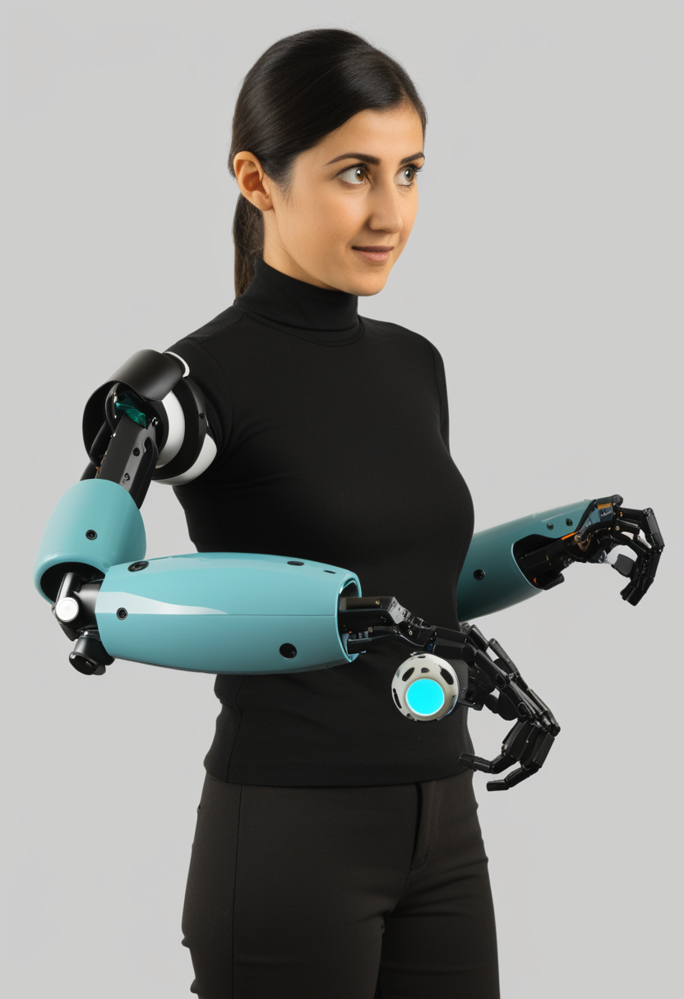
眼球追跡でロボットアームを駆動し日常動作を支援する研究2本が公開。arxiv:2601.17404「Eye-Tracking-Driven Control of a Robot Arm」では把握・配置等の動作を眼球指令で実現し、Tobii等の商用デバイスと統合可能な設計を採用。arxiv:2505.23147「Wizard of Oz Studies for Eye Gaze-Based Shared Control」では視線ベース共有制御のデザイン選択肢を評価し、ALS・脳性麻痺患者への応用可能性を実証。BCIインプラントを待たずとも視線＋ロボティクスが今すぐ日常動作支援に使えることを示す実用研究。
SynchronがFDA PMAに最も近く、NeuralinkはFull-stack BCI（動作・入力・音声）＋大量生産フェーズへ。視線制御×ロボットアームは今この瞬間から使える補助技術として補完する。
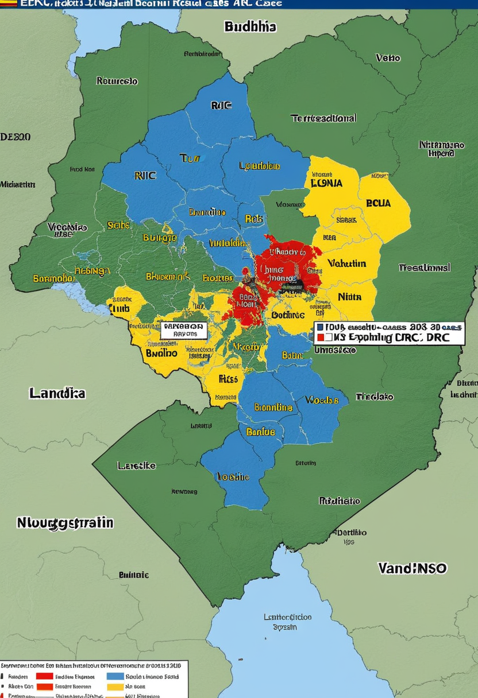
6/26既報（1,118例・291死者）から37例・13死者増。DRC内訳: イトゥリ州1,054例・北キブ98例・南キブ3例。ウガンダ19例（変化なし）。欧州ではフランス（6/24確認）・ドイツ（5/19確認）と輸入事例が2か国に拡大。ブンディブギョ型には有効ワクチンも承認治療薬もなく、PHEICは継続中。Lancet感染症の確率モデル研究は「越境波及リスクが高水準」と警告しており、接触追跡と隔離のみが頼みという厳しい状況が続く。
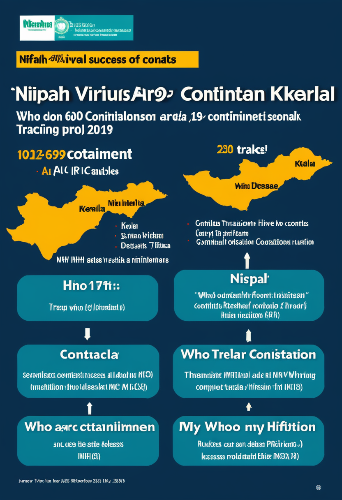
6/11にコジコード地区で成人男性1名（5/30発症・6/10 ICU入院・人工呼吸器）の確定症例を発表（WHO DON-609）。6/18時点で接触者104名（医療従事者含む）を特定・追跡中、二次感染報告なし。4〜9月はニパ高警戒期間。2019・2021・2023年に続くケーラ州での散発的NiV検出だが、今回は早期検出と完全な接触追跡で封じ込め成功に近い。感染致死率40〜75%の危険な病原体に対してインドの公衆衛生体制が成果を示しつつある。
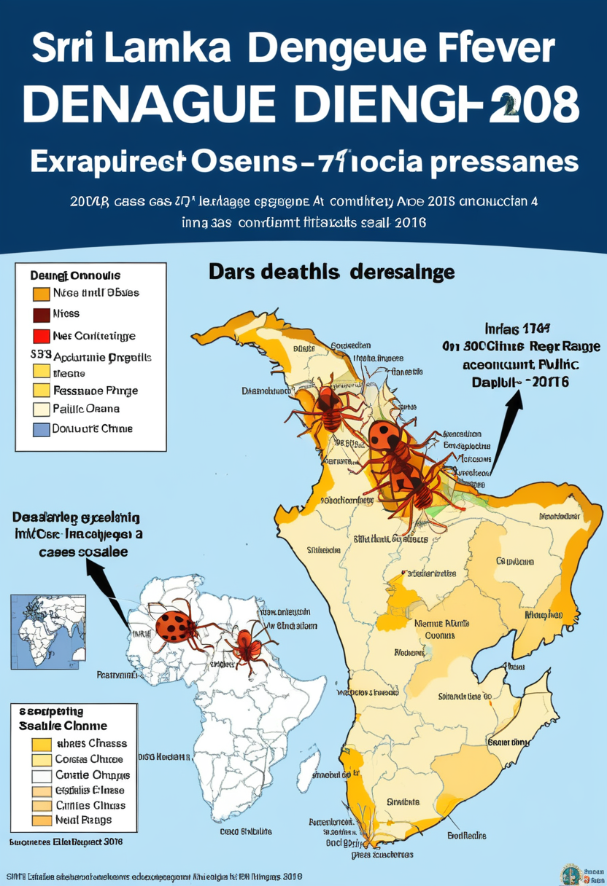
前回（6/23掲載）の44,000例（6/19）から6日で約3,530例増。2019年以来最大規模の感染爆発が加速中。PAHOの疫学アラートでは気候変化下でデング流行地域の拡大が顕著とされており、サモアでも2025年1月以来の累計が約19,764例・9死者（6/14時点）に達している。東南アジア・太平洋地域でのデング流行は今夏も高水準で推移する見通しで、エボラPHEIC・ニパ対応と同時進行で公衆衛生体制への負荷が増大し続けている。
エボラDRCが欧州2か国へ波及した同週、インドのニパウイルスは「完全封じ込め」に近づいた。サーベイランス体制の差が致死感染症の帰結を分ける。デングの連続加速も続く。
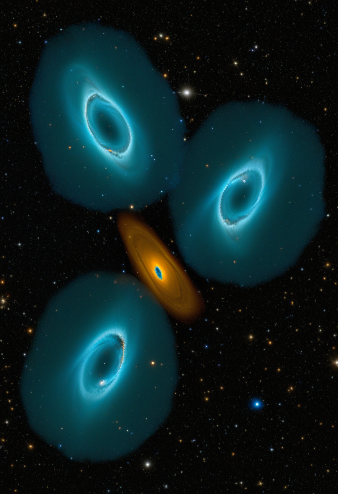
JWSTが初期宇宙（約120億年前）で少なくとも6銀河が激しく衝突・合体している場面を捕捉。この銀河群は将来、宇宙最大級の銀河の1つになり得るとされ、初期宇宙での急速な構造形成プロセスを示す直接証拠として注目される。Euclid Q2（6/24公開・既報）と合わせ、宇宙構造論のデータが急加速中。「宇宙最初の1〜2億年」に大規模構造がいかに形成されたかという問いに直接答えるデータが蓄積されつつある。
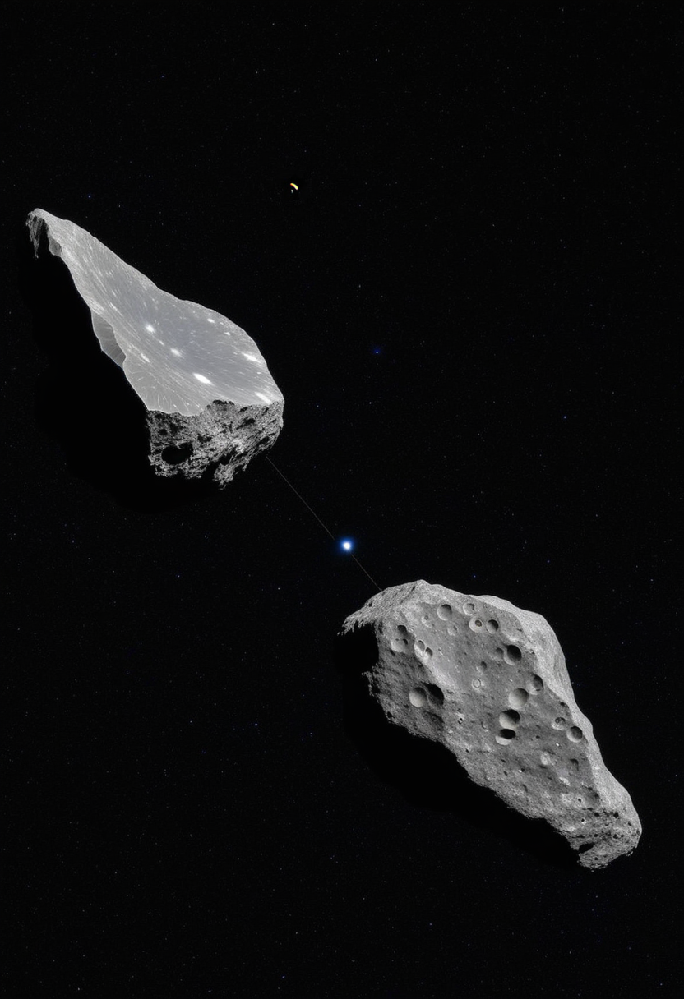
CNSAの天問2号は2026年6月7日にカモオアレワ（469219）の軌道に入り（6/10既報）、7月4日に20km圏内への最接近フェーズを開始予定。サンプル採取は2026年7月、地球帰還は2026年末〜2027年初頭を計画。arxiv（2606.25512）では今回の接近に向けた軌道計測・物理特性の最新解析が公開され、月起源説への再検証も進行中。カモオアレワは月と同じ酸素同位体比を持つ可能性があり、「亡命月岩石」仮説の検証が次の焦点となる。
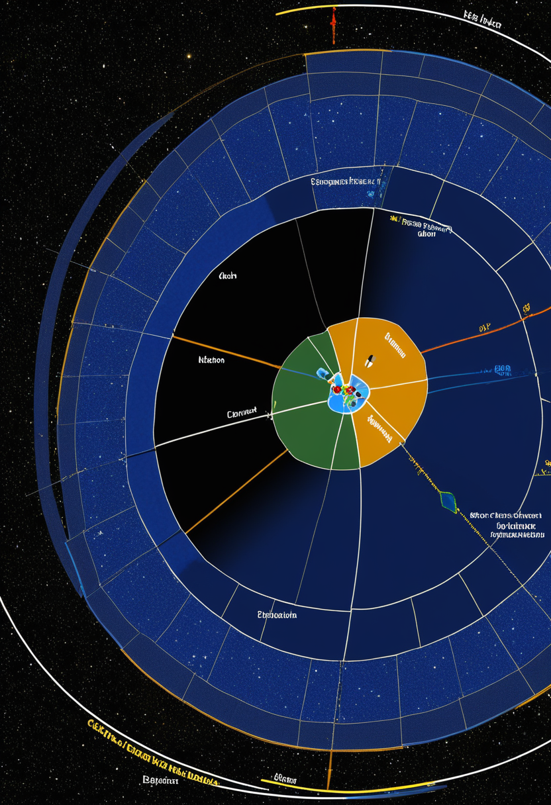
アップグレード版LHCb検出器の「初収穫」として、2チャームクォーク+1ダウンクォークで構成されるΞcc⁺（二重チャームバリオン）を初観測（2026年3月）。標準モデル内の予測範囲だが、新型検出器の精度を実証する重要成果。先月（6/11既報）の「チャーミングペンギン崩壊4σ逸脱」と合わせ、LHCbが精密検証と「その先」の探索で二重の成果を上げている。素粒子物理学の「既知の地図の再測量」と「未知への探索」が同時進行している。
JWSTが初期宇宙の銀河形成現場を直撃し、天問2号が7/4の最接近へ向けて軌道確認を続ける。LHCbの新粒子は素粒子物理の地図更新が続くことを示す。宇宙の問いへの答えが加速している。
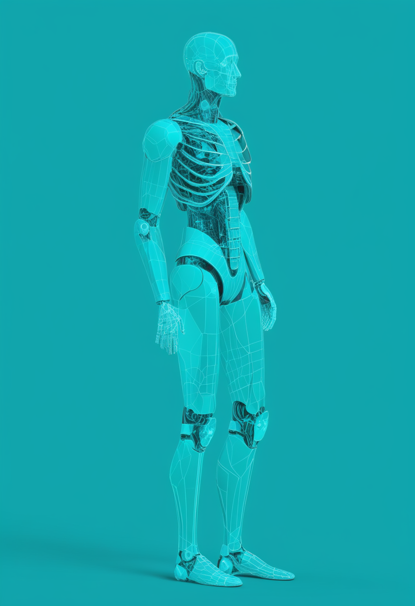
arXivの新論文「Towards the 'Digital Me': Authentic Conversational Agents Powered by Individual Human Digital Twins」が、個人のHDTを核とした「本物らしい会話エージェント」の構築可能性を提示。ユーザーの性格・思考パターン・スキルセットを反映したHDTは政策反応の予測・市場調査アンケート代行・個人化されたAIアシスタントに活用できる。しかしプライバシー侵害・インフォームドコンセント・本人となりすましという倫理的障壁が未解決で、規制先行が技術普及の前提となると強調する。
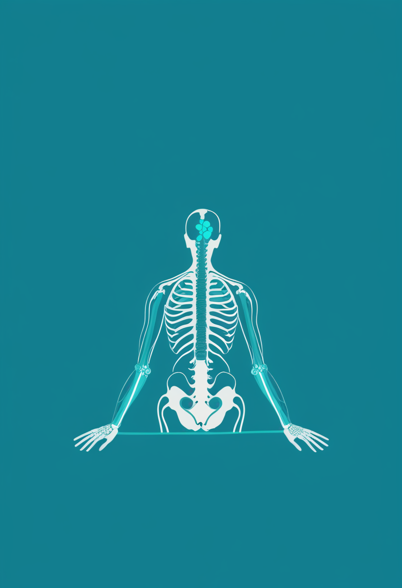
PMC掲載論文（PMC12561581）が「認知デジタルツイン（Cognitive Digital Twin, CDT）」の医療応用を体系的にレビュー。バイオマーカーとAIを統合して個人の認知機能を継続的にモニタリングし、精密介入を行う新パラダイムを提案。臨床実装の最大障壁はデータプライバシー要件と既存医療インフラとの統合。CDTは「ほぼ無介入で意識的行動を自律実行するデジタル人格」への進化形と位置づけられており、同日公開のDigital Me論文と相互補完する研究潮流を形成している。
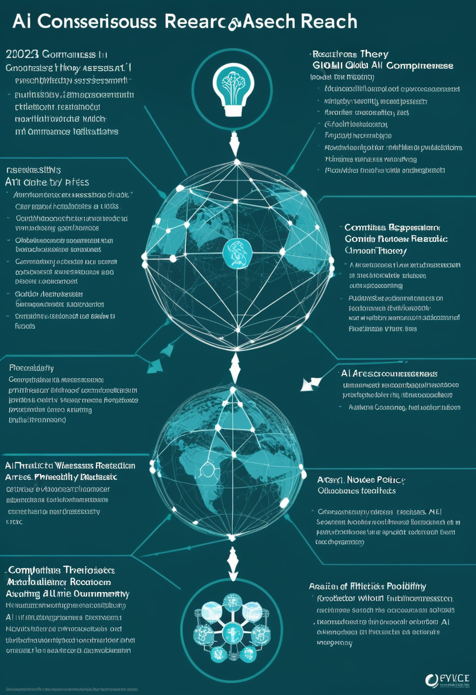
Patrick Butlin・Yoshua Bengio・Tim Bayne他19名の意識研究者が共著でAI意識の「確率的評価ツール」を発表（2026年1月、Trends in Cognitive Sciences）。グローバルワークスペース理論（GWT）・高次表現理論など複数の競合理論を総合し、「現時点AIに意識がある確率は不確実だが否定できない」と結論。意識を持つAIを適切なフレームワークなく開発した場合の「道徳的惨事リスク」を初めて公式に警告した。AI開発規制と哲学的議論の交差点に位置する重要文書。
「Digital Me」論文が個人HDTの実用化シナリオを提示し、CDTレビューが医療認知モニタリングの新パラダイムを体系化した。AI意識コンセンサスは「道徳的リスク」という前例のない警告を正式記録に残した。
本日2026年6月28日、日曜日。インド・ケーラ州でWHO DON-609として確認されたニパウイルスの接触者104名全員が6週間にわたり陰性を維持し、封じ込め成功が視野に入った。同週、エボラDRCは欧州2か国を含む1,155例・304死者という重さを増し続けた。同じPHEIC並行下で、人類の公衆衛生能力の格差がこれほど鮮明に並んだ週はそう多くない。天では天問2号が7月4日の最接近へ、JWSTは6銀河合体という宇宙の形成現場を記録し、CERNは新しい粒子の輪郭を確かめた。SMAでは高用量スピンラザが国際承認を確立し、アピテグロマブが9月30日の判定日へ近づく。人間のデジタルツインをめぐる論文群が「自分とは何か」という古い問いに新しい技術言語を与えている。
封じ込める力を持つ人類が、宇宙の問いにも答えようとしている。おはようございます。